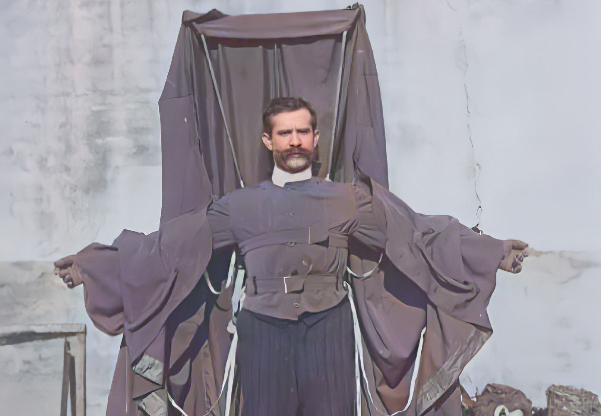
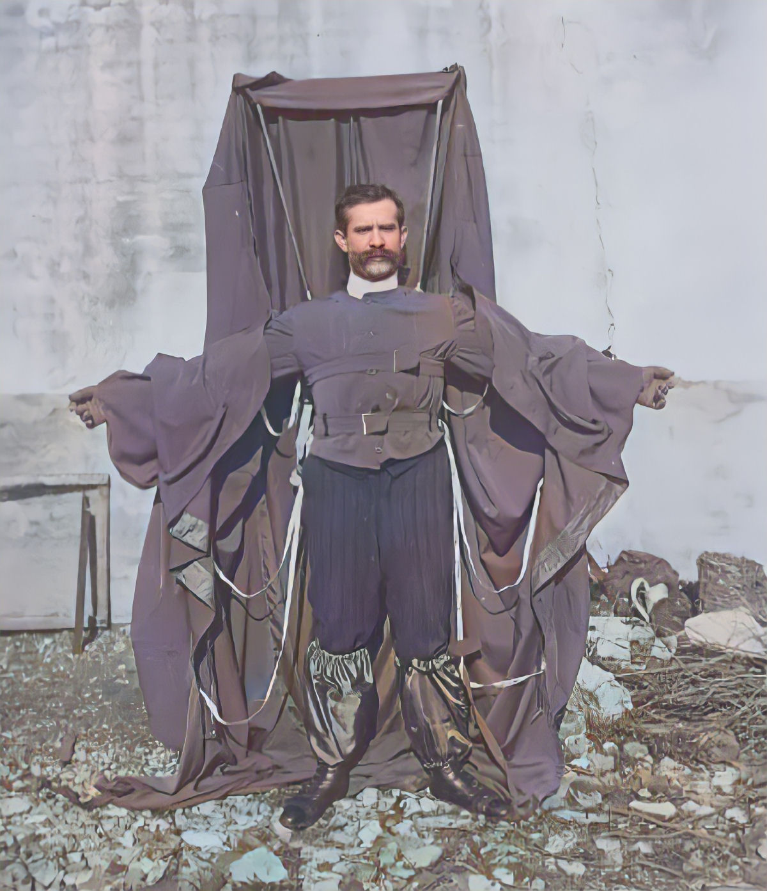

2 - Franz Reichelt vestindo seu traje de paraquedas.

3 - O primeiro salto de paraquedas do mundo por Louis-Sébastien Lenormand, em 1783.
4 - Franz Reichelt mostrando seu traje de paraquedas antes do salto.
5 - Ilustração da época com o salto de Franz Reichelt.
6 - Franz Reichelt vestindo seu traje de paraquedas.

Vídeo do salto
Curta metragem
No dia do teste, 4 de fevereiro de 1912, Franz chegou à Torre Eiffel vestido com seu traje de paraquedas que era, segundo a imprensa, "apenas um pouco mais volumoso que as roupas comuns". O traje não restringia os movimentos do usuário quando o paraquedas estava embalado, e abrir o paraquedas era tão simples quanto estender os braços para formar uma cruz com o corpo. Depois de estendida, a roupa lembrava uma espécie de manto com um vasto capuz de seda, segundo o jornal Le Temps.
Franz informou aos jornalistas reunidos que a área de superfície do projeto final era de 30 metros quadrados, uma grande melhoria em relação aos seus primeiros projetos. O alfaiate também afirmou que o traje estava pesando apenas 9 kg.
Uma grande multidão se reuniu na base da Torre Eiffel para ver, o que eles presumiam, um manequim sendo jogado do primeiro nível do imponente marco. No entanto, quando Franz se apresentou vestindo um traje, ficou claro que sua intenção era diferente.
Apesar de estar cercado por uma multidão de policiais e repórteres, poucos tomaram a iniciativa de detê-lo. Franz ocultou suas verdadeiros intenções até o último momento, o que pegou todos de surpresa, inclusive seus amigos, que tentaram dissuadi-lo. Eles até alegaram que ele teria amplas e novas oportunidades para provar seu invento, mas Franz simplesmente não quis ouvir ninguém. Quando questionado se pretendia usar cordas de segurança, ele respondeu:
- "Quero tentar o experimento sozinho e sem truques, pois pretendo provar o valor de minha invenção."
Para aquelas objeções técnicas urgentes, como a altura da queda ser muito curta para o paraquedas abrir totalmente, Franz respondeu com desdém:
- "Você vai ver como meus setenta e dois quilos e meu paraquedas darão aos seus argumentos a mais decisiva das negações."
Por fim, Franz começou a subir as escadas. No caminho, ele fez uma pausa, voltou-se para a multidão e gritou alegremente: - "Até breve!" Seus amigos continuaram a tentar dissuadi-lo do salto, mas foram incapazes de abalar sua determinação. No primeiro convés da torre, com um pouco mais de 57 metros de altura, Franz ficou na saliência e hesitou por 40 segundos completos. Então saltou.
O paraquedas de Franz mal se abriu. Ele caiu como um tijolo enrolado em seu próprio traje. Franz estava morto antes que os primeiros espectadores corressem para a massa mutilada de carne, ossos e tecidos. Seus olhos estavam supostamente abertos e dilatados de terror.
Mais tarde alegaram que Franz se inspirou a pular, em vez de usar um manequim, quando soube que um limpador de chaminés norte-americano, Frederick Law, havia saltado de paraquedas com êxito de uma altura de 67 metros na Estátua da Liberdade de Nova York usando um dossel convencional apenas dois dias antes.
Em qualquer caso, a imprudência de Franz foi muito discutida nos jornais no dia seguinte e por vários dias. O comissário da polícia, Louis Lépine, foi obrigado a explicar que Franz não foi autorizado a dar um salto humano, como diziam os jornais.
De fato, após a morte de Franz, as autoridades ficaram cautelosas em conceder permissão para qualquer outro experimento com paraquedas usando a Torre Eiffel. Cada inscrição era examinada cuidadosamente e rejeitada se o solicitante já tivesse tentado fazer algo suspeito. Um inventor queria testar seu "paraquedas-helicóptero" e foi negado
Franz acabou inspirando um videogame, uma obra de teatro e um curta-metragem que narra sua vida. Sua história sombria foi contada inúmeras vezes, mas nem sempre da maneira mais lisonjeira. Logo após o incidente, um jornalista sugeriu que apenas metade do termo "gênio-louco" se aplicava a Franz.
O coitado também virou motivo de piada fácil e inclusive no fim do vídeo da British Pathé é possível apreciar uma situação bizarra de alguém medindo a cavidade deixada no chão pelo corpo de Franz, possivelmente para saber quem tinha ganhado alguma aposta.
Franz Reichelt, que acabou apelidado de "Alfaiate Voador", ganharia com destaque e louvor o prêmio Darwin se este já existisse.
A vida do Alfaiate Voador é contada em um curta metragem de Pablo Lopez Paredes, intitulada "Le Tailleur Austrichien", realizado em 1913. A equipe Zheit foi atrás desse curta metragem....confira, é bem interessante!!!